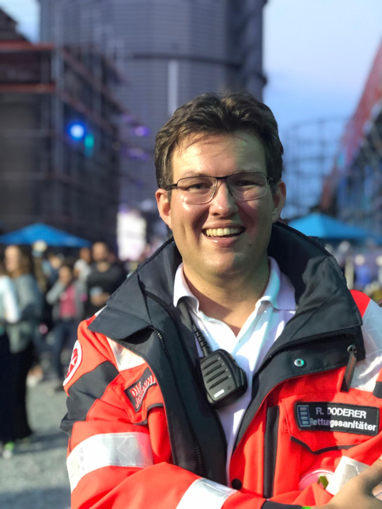

Strukturgeber & Transformationsarchitekt
für Marketing · Kommunikation · Digitale Marken- und Unternehmensentwicklung
20+ Jahre Erfahrung an der Schnittstelle von Marke, Digitalisierung und Kommunikation – einschließlich der praxisbewährten Integration von KI in Marketing-Workflows und Content-Produktion. Ich kombiniere transformative Business-Führung und Entscheidungsstärke aus 25 Jahren Krisenmanagement und bringe Struktur, damit Wandel gelingt.
Ich bin Raphael Doderer – Führungskraft mit über zwei Jahrzehnten Erfahrung an der Schnittstelle von Marke, Digitalisierung und Unternehmenskommunikation in Medien, Gesundheits- und Sozialwirtschaft. Ich bringe Struktur in komplexe Transformationsprozesse und führe interdisziplinäre Teams mit Klarheit, Empathie und Wirkung.
Was mich unterscheidet: Ich lebe Führung nicht nur im Büro. Als aktiver Rettungssanitäter und Zugführer im Bevölkerungsschutz bei den Johannitern in Augsburg erlebe ich, was es bedeutet, auch unter Druck klar zu denken, schnell zu entscheiden sowie gegenseitiges Vertrauen und Teams aufzubauen.
Was ich im Ehrenamt lerne, bringe ich ins Berufsleben – und umgekehrt. Führung ist für mich keine Funktion, sondern eine Haltung.
Ob als Leiter eines Transformationsprojekts oder im Führungsstab eines Großeinsatzes, mein Verständnis von Führung ist dasselbe: Menschen befähigen, Strukturen schaffen, Verantwortung übernehmen.
Vom Konzept bis zur Marktreife – ich entwickle Markenidentitäten, die skalieren und im Wettbewerb bestehen.
Datengetriebene Vermarktungsstrategien, die Zielgruppen erreichen und diese messbar wachsen lassen – digital und live.
Von Ticket-Sales bis Kooperationsvolumen – ich übersetze Marke in messbaren Business Impact mit klaren KPIs.
Strukturen, Prozesse und Kulturen weiterentwickeln – mit KI-Integration, Governance-Modellen und Change Communication.
Interdisziplinäre Teams aufbauen, befähigen und in Veränderungsprozessen führen – aus Überzeugung und mit Leidenschaft.
Konkrete Zahlen & Ergebnisse aus 20 Jahren Führungspraxis:
Executive Track Record ↓Als Marketingleiter der ANTENNE BAYERN GROUP verantwortete ich Kampagnen, Plattform-Content und Live-Erlebnisse für Millionen Menschen im DACH-Raum – darunter die offizielle Partnerschaft bei der UEFA EURO 2024 als Host-City-Partner in München.
Strategische Markenführung, Positionierung und Kampagnensteuerung in Medien, Gesundheits- und Sozialwirtschaft. Vom Konzept über Controlling bis zur kontinuierlichen Optimierung.
Aufbau und Führung interdisziplinärer Teams bis zu 11 Direct Reports. Förderung von Eigenverantwortung, Resilienz und einer Kultur des Miteinanders – aus Überzeugung.
Steuerung von Media-Budgets bis 25 Mio. € p.a. sowie Relaunch-Budgets im mehrstelligen Millionenbereich – mit klarem Fokus auf ROI und messbaren Ergebnissen.
Konzeption und Umsetzung digitaler Changeprozesse: E-Commerce, Social Intranet, internationale Rollouts von Web, App und Social Media sowie datenbasierte Entscheidungsprozesse.
Integration von KI-Tools in Kommunikations- und Marketingprozesse. Effizienzsteigerung durch intelligente Automatisierung von Content-Hubs – mit Augenmaß, Markenstimme und Ethik.
Analyse und Neuaufbau von Abteilungsstrukturen, Prozessen und Governance-Modellen für Multi-Brand-Portfolios – mit dem Blick für das Machbare.
Interne wie externe Kommunikationsstrategien: Krisenkommunikation, Change Communication, PR und Stakeholder-Management auf Vorstands- und Aufsichtsratsebene.
Aufbau und Leitung von Krisenstabs-Strukturen (u.a. Corona) sowie Etablierung von Reputationsmanagement-Systemen – beruflich wie ehrenamtlich bewährt.
Deutsche Sprachwissenschaft, Politikwissenschaft, Staats- und Völkerrecht (M.A.)
Dialogmarketing-Fachwirt (BAW) · Bayerische Akademie für Werbung & Marketing
Ehrenamtliches Vorstandsengagement für ASB, BRK, DLRG, Johanniter, Malteser und THW. Koordination, Strategie und Öffentlichkeitsarbeit auf überorganisatorischer Ebene.
Rettungssanitäter und Zugführer – regelmäßig im Einsatz im Rettungsdienst, bei Sanitätswachdiensten, SEG-Einsätzen und Großschadenslagen.
Skalierung von „Klassik Radio Live in Concert" mit 22.000 Besucher:innen und +25 % mehr Spielorte durch datengetriebene Vermarktung.
Aufbau und Skalierung der neuen Audio-Brand Beats Radio (ma 2025 Audio II › ma 2026 Audio I) bei gleichzeitiger Stabilisierung von Klassik Radio.
Verdopplung der organischen Streaming-Sessions bei Klassik Radio Plus durch neue Plattform-Architektur – zusätzlich direkt vermarktbares Inventar.
Steigerung des Kooperationsvolumens und erstmalige nationale TV-Kampagnen für Klassik Radio & Beats Radio über TV, Digital und Print.
Neupositionierung aller KJF-Einrichtungen in 5 Jahren. Mitglied der Projektleitung bei ANTENNE BAYERN GROUP für alle Marken-Relaunches im DACH-Raum.
Mandantenfähiges Social Intranet inkl. DMS mit 10.000+ QM-Dokumenten für die KJF mit 150 Standorten. Post-Merger-Integration einer Klinik-Übernahme.
Unternehmensweite KI-Workflows und automatisierte KPI-Dashboards – messbare Effizienzsteigerung in der Content-Produktion bei der ANTENNE BAYERN GROUP und Klassik Radio.
German Design Award für das Corporate Design der KJF Augsburg. Doppelte Auszeichnung des Klinikum Augsburg in der Top 10 der besten Klinik-Pressestellen (KommGe-Award).

Aktiver Rettungssanitäter im Rettungsdienst und Zugführer im Bevölkerungsschutz – praktisch im Dienst auf Rettungstransportwagen und im Krankentransport, bei Sanitätswachdiensten und Großeinsätzen. Führung unter realen Bedingungen: unter Druck klar denken, schnell entscheiden, Menschenleben verantworten.
Was im Einsatz funktioniert, funktioniert auch im Unternehmen – Struktur, Kommunikation und Vertrauen auch unter Druck.
Ehrenamtlicher Medienbeauftragter im Vorstand des Bündnisses von ASB, BRK, DLRG, Johannitern und Maltesern sowie THW. Kommunikationsstrategie, Öffentlichkeitsarbeit und Vernetzung auf überorganisatorischer Ebene.
Bei Großschadenslagen Führungsverantwortung im Einsatzstab – Schnittstelle zwischen operativer Lage (u.a. Weihnachtsbombe 2016 mit internationaler Berichterstattung), strategischer Kommunikation und Lobbyarbeit.
Was im Vorstand funktioniert, funktioniert auch im Unternehmen – Vernetzung, Strategie und Kommunikation auch ohne formale Hierarchie.
Ich freue mich auf den Austausch – ob zu einer konkreten Führungsposition, einem ersten Kennenlernen oder einer neuen Herausforderung, die noch keinen Namen hat.